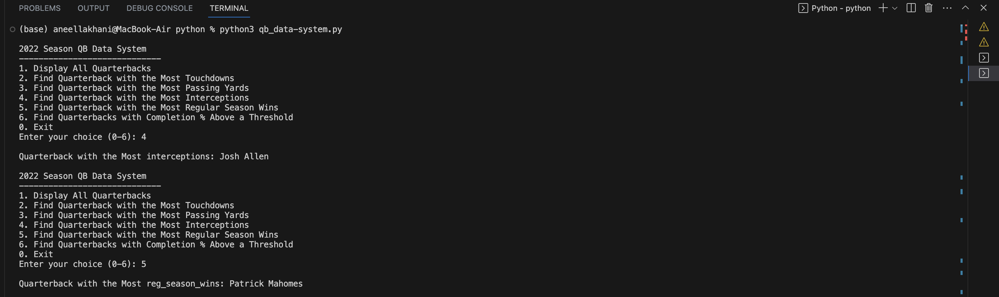
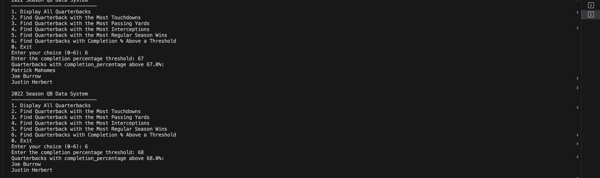
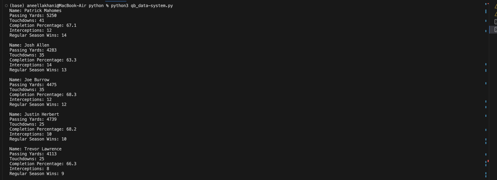
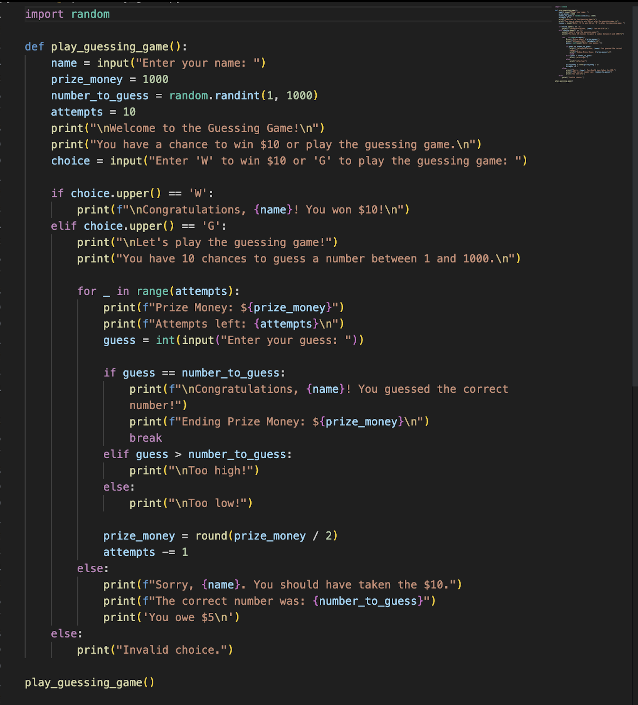
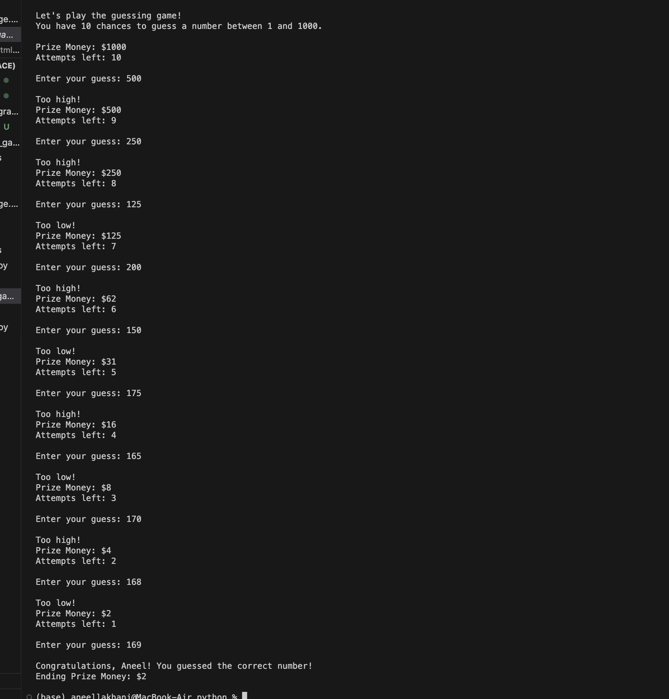

I designed this python program to analyze and compare five NFL quarterbacks stats from the 2022 season. The data used comes from nfl.com/stats/player-stats/.
The code begins by defining a Quarterback class, serving as a blueprint for creating quarterback objects. Each instance of the class represents a quarterback and is initialized with attributes such as passing yards, touchdowns, completion percentage, interceptions, and regular season wins. This demonstrates my understanding of object-oriented design and encapsulation.
I've also implemented a method within the Quarterback class. This allows the program to present a comprehensive view of all the quarterbacks and their respective performance metrics.
To demonstrate my proficiency in applying data analysis methods to derive meaningful insights from a dataset, I use lambda and also the the max() function, to find quarterbacks with the most touchdowns, passing yards, interceptions, and regular season wins.
Below are the screenshots for the code of the program.
To demonstrate data filtering and manipulation, I implemented the use of a function and a for loop to filter quarterbacks based on a completion percentage threshold.
To enhance user experience, I incorporated a menu-driven interface. The menu() function presents a clear menu of options, allowing users to choose from various analysis options. The main program, run_program(), uses a while loop to repeatedly display the menu and process the user's choice. Depending on the user's input, the program calls the corresponding function to perform the requested analysis or exits the program if the user chooses to do so.
The screenshots below provide a look into the program's user functionality. A menu system is displayed for user interaction. The menu provides options to perform various actions, including finding the quarterback with the most touchdowns or passing yards, identifying the quarterback with the most interceptions, or regular season wins.
Selecting option 6, lets the user filter quarterbacks based on a completion percentage threshold.
The program can also display all of the players with thier performance stats in a clear and organized manner.

I designed the code to be scalable and extensible. It allows for easy addition of new quarterbacks or incorporation of additional features.
This project exemplifies my proficiency in object-oriented programming, data analysis, data filtering. It showcases my ability to work with data, derive insights, and present information in a clear manner.
This Python program is a game I designed. Below are screenshots of the code and also of the program being played out.
The program offers the user a choice to either win $10 or play the guessing game for a chance to win a larger prize. After choosing to play, The user has 10 attempts to guess a randomly generated number between 1 and 1000.
The program dynamically adjusts the prize money based on the user's progress and provides feedback on each guess, indicating if the guess is too high or too low.
I used python programming concepts such as user input, random number generation, conditional statements, loops, string formatting and functions for the development of this game. Building this game also demonstrates my ability to implement logical decision-making, and provide a responsive user interface.